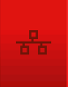

Controlador de Acesso Facial
O controle de acesso por biometria é realizado por um controlador de acesso com reconhecimento facial, um dispositivo moderno que utiliza reconhecimento facial para monitorar e controlar a entrada e saída de pessoas. O aparelho possui uma tela touchscreen e um software de fácil utilização, além de permitir a geração de relatórios de acesso.
IMPORTANTE: AS OPERAÇÕES DE CADASTRO DE USUÁRIOS SÓ PODEM SER REALIZADAS POR USUÁRIOS QUE POSSUAM CREDENCIAIS DE ADMINISTRADOR DO DISPOSITIVO.
Interface
O controlador facial possui uma barra de status na parte superior da tela, na qual é possível verificar o status da conexão do dispositivo, bem como o estado da porta giratória.
Status da Conexão com a Rede
| CONECTADO | NÃO CONECTADO |
|---|---|
|  |
Status de Travamento da Porta Giratória
| TRAVADA | DESTRAVADA |
|---|---|
Cadastro de um Novo Usuário
Para cadastrar um novo usuário siga os seguintes passos:
- acesse o menu: [MENU] → [CADASTROS] → [USUÁRIOS];
- clique em [ADICIONAR];
- preencha o ID e o nome do usuário;
- para cadastrar a face, pressione o botão correspondente;
- posicione o rosto corretamente e selecione [TIRAR FOTO].
OBSERVAÇÃO: CADA FACE CADASTRADA DEVE SER ÚNICA. A TENTATIVA DE REGISTRAR UMA FACE JÁ CADASTRADA RESULTARÁ EM UMA MENSAGEM DE ERRO E O CADASTRO NÃO SERÁ EFETUADO.
Edição das Informações de um Usuário
Para editar um usuário existente, siga os seguintes passos:
- acesse: [MENU] → [CADASTROS] → [USUÁRIOS];
- clique no nome do usuário que deseja editar;
- altere as informações desejadas;
- para excluir atributos específicos, pressione [EXCLUIR], selecione os atributos e clique em [OK].
Exclusão de um Usuário
Para remover um usuário, siga os seguintes passos:
- acesse a tela de edição do usuário;
- pressione [EXCLUIR];
- selecione a opção Usuário;
- confirme a exclusão pressionando [OK].
OBSERVAÇÃO: APÓS A EXCLUSÃO DE UM USUÁRIO, OS DADOS DESTE USUÁRIO NÃO PODERÃO SER RECUPERADOS. OS REGISTROS DE ACESSO AINDA ESTARÃO DISPONÍVEIS, MAS SÓ PODERÃO SER ENCONTRADOS PELO ID, POIS INFORMAÇÕES COMO O NOME DESTE USUÁRIO SERÃO PERDIDAS.
Exclusão de Administradores
Quando há pelo menos um administrador cadastrado, o acesso ao menu principal exige autenticação de um administrador.
Para remover todos os privilégios de administradores:
- acesse: [MENU] → [CADASTROS];
- pressione [APAGAR ADMINS];
- confirme a operação pressionando [OK].
OBSERVAÇÃO: SE TODOS OS PRIVILÉGIOS DOS ADMINISTRADORES FOREM REMOVIDOS, O PROCESSO NÃO PODERÁ SER REVERTIDO E O MENU FICARÁ LIBERADO ATÉ QUE NOVOS ADMINISTRADORES SEJAM CADASTRADOS. ISSO SÓ OCORRE SE TODOS OS ADMINISTRADORES FOREM REMOVIDOS.
Mais Informações
Se precisar de mais informações sobre o controlador de acesso, acesse link.